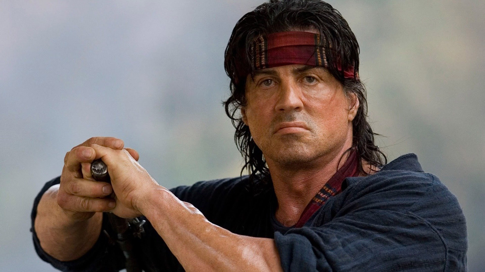

Sylvester Stallone
Michael Sylvester Gardenzio Stallone (Nueva York, 6 de julio de 1946), conocido simplemente como Sylvester Stallone, es un actor, guionista, productor y director de cine estadounidense de origen italiano. Stallone es reconocido mundialmente como uno de los principales actores del cine de acción de Hollywood. Ha dado vida a dos personajes icónicos de la historia del cine: a Rocky Balboa, un desconocido boxeador de Filadelfia que contra todo pronóstico se convierte en campeón, y a John Rambo, un atormentado ex boina verde veterano de la guerra de Vietnam, especializado en guerrilla, supervivencia y combate. La cinta Rocky (1976) le valió tres nominaciones al premio Óscar, en la categoría de mejor actor, mejor película y mejor guion. En 2016, ganó el Globo de Oro como mejor actor de reparto por el papel de Rocky Balboa en el spin-off de la saga, Creed (2015), además de ser nominado al Óscar en la misma categoría. Aparte de las sagas de Rocky y Rambo, entre sus cintas más populares se encuentran: Cobra (1986), Lock Up (1989), Tango y Cash (1989), Demolition Man (1993), Cliffhanger (1993), Asesinos (1995), Judge Dredd (1995) y The Expendables (2010). En televisión, destaca su papel protagónico en la serie Tulsa King.
Rambo - Peliculas


Rambo First Blood
John Rambo (Sylvester Stallone), un veterano de la guerra de Vietnam y miembro de las Fuerzas Especiales a quien se le condecoró con la Medalla de Honor del Congreso, tiene problemas para adaptarse a la vida de civil y vagabundea por Estados Unidos.
Rambo descubre que uno de los miembros de su antigua unidad, al que va a visitar, ha muerto de cáncer, causado por las exposiciones al Agente Naranja, lo cual lo deja muy dolido, aun en el fondo sabiendo que él es el último hombre vivo de su unidad. Al continuar el viaje llega a un pequeño pueblo en el estado de Washington, Hope (nombre ficticio, ya que la verdadera Hope, donde se rodó la película, se encuentra en la Columbia Británica, Canadá).
Nada más llegar tiene problemas con el sheriff local, Will Teasle (Brian Dennehy), quien, llevado por prejuicios hacia gente pobre como él, le conmina a irse. Rambo se niega y el sheriff lo detiene por vagabundear y por resistencia a la autoridad. Revisándolo, descubre sorprendido que lleva un cuchillo de combate militar y le pregunta para qué lo necesita, a lo que Rambo responde que es para cazar. Teasle no quiere creerle y lo lleva a la comisaría.
Una vez allí, es registrado y golpeado por varios agentes. Durante los golpes y la ducha forzada, Rambo experimenta recuerdos muy vívidos de su estancia como prisionero de guerra. Cuando los policías tratan de afeitarlo en seco, Rambo estalla al recordar un pasaje de su tortura, en la que recibió una herida física con un cuchillo; golpea a los oficiales, roba una motocicleta y se dirige a las montañas para esconderse.
Un pequeño grupo de policías sale en su busca para capturarle, pero son todos neutralizados por Rambo (sin causar ningún muerto, con excepción de uno de los policías que ha tratado de asesinarlo en venganza por la humillación), al ser especialista en técnicas de guerrilla. Entonces, el sheriff Teasle, humillado por la derrota, decide llamar a la Guardia Nacional.
El antiguo oficial al mando de Rambo, el coronel Samuel Trautman (Richard Crenna), advierte a las autoridades del riesgo de intentar capturar a Rambo, ya que, dada su experiencia en combate, puede matarlos a todos y aconseja calmar los ánimos, pero Teasle le ignora, porque en realidad persigue la muerte de Rambo llevado por sus prejuicios y en venganza por la derrota y la muerte del policía.
La Guardia Nacional encuentra el escondite de Rambo, la entrada de una mina, e intentan detenerlo. Debido a que comienzan a dispararle, Rambo intenta repelerlos también a disparos y la Guardia decide atacarlo con un lanzacohetes M72 LAW. Rambo, sabiendo que sus perseguidores le creen muerto, se escabulle por los túneles y encuentra otra salida cerca de la carretera principal del pueblo. Roba un camión de la Guardia Nacional y vuelve al pueblo decidido a vengarse por lo ocurrido, donde destruye una gasolinera, postes de teléfono y una tienda local de armas con el fin de distraer la atención de las fuerzas del orden.
Rambo localiza a Teasle, su objetivo, sobre la azotea de la comisaría. Surge un enfrentamiento entre ellos, que Teasle pierde. Cuando Rambo se dispone a acabar con la vida de Teasle, incitado por él, el coronel Trautman aparece para decirle a Rambo que se detenga y termine la "miniguerra" que había iniciado en ese pueblo. Rambo habla con el coronel entre lamentos y sollozos, liberando su ira y penas ocultas por la forma en que, al volver de la guerra, la sociedad lo ha maltratado y el ejército lo ha olvidado. Trautman comprende las palabras de Rambo y su pedido interno de ayuda, y lleno de dolor y tristeza decide abrazarlo.
Rambo accede a rendirse y sale de la comisaría junto a Trautman, mientras que Teasle es llevado al hospital con una mirada despreciativa de Rambo y de Trautman.
Rambo First Blood Part 2
John James Rambo lleva 5 años encarcelado por sus antiguos crímenes (en First Blood), pero recibe la visita del coronel Trautman, quien le hace la propuesta de la misión optativa de regresar a Vietnam, a comprobar si aún quedan prisioneros de guerra. Si la misión resulta bien, el presidente le concedería el perdón, y sería libre. Rambo acepta.
Está bajo las órdenes de un falso teniente, Marshall Murdock, al que en el fondo solo le interesan el dinero y el poder de su nación, y al que le da igual perder a unos cuantos hombres, por muy inocentes que sean, si sigue controlando las cosas como él quiere. Murdock le encomienda a Rambo que solo saque fotos, y que no ataque al enemigo. Pero al saltar en paracaídas sobre un área selvática prohibida, Rambo pierde todo su equipo, excepto un cuchillo dentado y un arco.
Ya en Vietnam es ayudado por una chica vietnamita, Co Bao. Tras descubrir que el campamento al que lo habían enviado no estaba vacío, empieza a atacar. Cuando tiene que regresar a Tailandia, Murdock, al saber que lleva con él a un prisionero norteamericano, y que no ha hecho fotos como le dijo, ordena que suspendan la misión, abandonando a Rambo acorralado de nuevo con las fuerzas armadas vietnamitas. Rambo es capturado por las fuerzas locales y torturado por el soviético Teniente Coronel Podovsky. Entretanto, Trautman confronta a Murdock por traicionar a Rambo, y después de que Murdock intenta justificar su modo de proceder, Trautman le insinúa que era una equivocación de su parte dar el asunto por "cerrado", cómo pretendía hacer, ya que Rambo no se dará por vencido. Co Bao se hace pasar por prostituta y ayuda a Rambo a escapar del campamento. Llegando a la ladera del río, Rambo agradece y promete a Co casarse con ella para que pueda emigrar hacia Estados Unidos, lo que significaba para él, el fin de su guerra, cerrar el círculo de violencia y muerte que experimenta. Pero, de regreso a la base, el comandante aliado local Tay acribilla y asesina a Co. Rambo toma en sus brazos a Co mientras muere, prometiéndole que nunca la olvidará y que en verdad la amaba; y la sepulta en la jungla.
Sumamente dolido y furioso, Rambo saca su lado más oscuro y violento, empezando a liquidar a los soldados vietnamitas y soviéticos, incluido Tay, a quien mata con una flecha explosiva. Más tarde, finalmente consigue llegar a su destino, al sitio donde están los prisioneros estadounidenses. Se dirige a un pequeño campamento enemigo con varios vehículos y lo destruye con flechas explosivas. Secuestra un helicóptero Bell 212 de los soviéticos después de echar a Yushin, y se dirige hacia el campo de prisioneros de guerra. Destruye la mayor parte del campamento con el helicóptero, luego aterriza y se arma con la ametralladora que está montada en el Huey, mata a los soldados restantes y rescata a todos los prisioneros de guerra. Llegan al helicóptero y se dirigen hacia el centro de comando estadounidense en Tailandia. Podovsky los persigue en su helicóptero Mil Mi-24. Aunque el helicóptero de Rambo está muy dañado, logra aterrizarlo en un río, y finge su muerte. Podovsky se le acerca y se descuida, momento en el que Rambo dispara un cohete al helicóptero de Podovsky, matándolo.
Rambo luego regresa a la base y destruye el centro de comando de Murdock. Amenaza a Murdock con un cuchillo, desafiándolo a encontrar y rescatar a los prisioneros de guerra estadounidenses restantes en Vietnam. Trautman luego consuela a Rambo y trata de apaciguarlo. Un Rambo enojado responde que solo quiere que su país ame a sus soldados tanto como sus soldados lo aman a él. Cuando Rambo se va, Trautman le pregunta: "¿Cómo vivirás, John?". A lo que Rambo responde, "Día a día". Los créditos de la película avanzan mientras Rambo se aleja mientras su mentor lo observa.

Rambo 3
La película trata sobre Rambo (Sylvester Stallone) en una misión en Afganistán durante la guerra afgano-soviética. Rambo vivía lejos de su vida como soldado reparando un templo budista y donando a sus monjes las ganancias que obtenía en la lucha de palos en Bangkok, Tailandia.
El Coronel Trautman (Richard Crenna) junto al asesor militar Robert Griggs (Kurtwood Smith) consiguen encontrarle para que los acompañe en la misión de suministrar cohetes y armas a los muyahidines afganos en su lucha contra el ejército soviético, pero se niega diciendo que su guerra había terminado.
Después de una charla psicológica sobre su lucha interior, en la que Rambo dice que no quiere seguir siendo un guerrero, Trautman le dice a Rambo que solo trataba de evadir lo que realmente era: ellos no lo habían hecho una máquina de combate, sino que desde un principio él era materia prima para serlo; Rambo insiste en seguir con su vida y se despide de su amigo. Ya en Afganistán, Trautman y su equipo son capturados por los soviéticos.
El coronel Zaitsev (Marc De Jonge), comandante de sección, somete a Trautman a un interrogatorio y tortura crueles en su base. Griggs vuelve a ver a Rambo y le comunica lo sucedido, a lo que decide ir a rescatarle. Gracias a Griggs, Rambo contacta con Mushaf Gani (Sasson Gabai) en un bazar de Peshawar, Pakistán, y juntos entran en Afganistán, deteniéndose en un poblado cercano a la base soviética. Masoud es el jefe del poblado, que se ofrece a ayudar a Rambo.
El dueño del bazar es espía e informa a Zaitsev sobre Rambo y sus planes, con lo que manda a sus helicópteros a arrasar el poblado. Al ver Rambo las atrocidades de los rusos, decide entrar en la base con la ayuda de los afganos. Aunque falla en el primer intento, Rambo rescata a Trautman y se refugian en una cueva. Zaitsev manda al comando Spetsnaz tras ellos y Rambo los elimina a todos con su arco. Cuando los protagonistas se creían a salvo, comandos soviéticos con tanques, helicópteros y spetsnaz liderados por Zaitsev los rodean, quedando Rambo acorralado otra vez.
Pero Rambo y Trautman no estaban solos; Masoud y un grupo de caballería muyahidin viene para ayudarles, y logran vencerles. Rambo destruye a Zaitsev y su helicóptero con un tanque T-72. Masoud le da las gracias en nombre de su pueblo y Rambo junto a Trautman se marchan a casa.
David Morrell, autor de Primera sangre, novela en la que se basó la primera película, escribió una novelización de esta tercera parte.
Rambo 4: Regreso al infierno
La película se desarrolla en una zona parial entre Tailandia y Myanmar (en esa época llamada Birmania), comienza con un rápido documental sobre el contexto bélico y la inestabilidad social de la guerra civil más larga de la historia.
En él, se esboza el drama de las minorías étnicas de Birmania huyendo durante décadas del hambre, la guerra y las torturas provocadas por uno de los regímenes militares más brutales del mundo. Muchos de los refugiados que cruzan la frontera para llegar a la vecina Tailandia, no lo hacen solo para esquivar las balas, ni buscar comida para sus hijos, sino huyendo del temido batallón de los violadores.
Las sistemáticas y numerosas agresiones han llevado a las organizaciones birmanas en el exilio, a denunciar que la Junta Militar ha desarrollado una política con «licencia para violar», aterrorizando a los opositores. Los desfiles organizados en los cuarteles son aprovechados para que los militares puedan escoger a sus víctimas dentro de un sistema de gratificación y entretenimiento.
John Rambo lleva retirado 20 años viviendo en Tailandia, ajeno a la guerra que asola al país y ganándose la vida como cazador de especies exóticas de serpientes y reptiles en el río Salween. Con base en esto, un grupo de misioneros evangélicos de la Iglesia de Cristo en Colorado, Estados Unidos, desea llevar su fe y ayuda humanitaria a un poblado de refugiados en el interior de la jungla, solicitando los servicios logísticos de John Rambo a través del río. Pronto comienza un debate con el líder de los misioneros sobre las posibilidades reales de alcanzar sus objetivos, quien al ver que Rambo insiste en que ellos no cambiarían ninguna circunstancia, se aleja de él; pero Sarah Miller, una integrante del grupo no acepta la negativa del veterano de guerra y conversa con él la propuesta de que él no pierde nada ayudándoles a salvar algunas vidas, dando paso a una catarsis en el excombatiente, que le convencerá de prestarles ayuda, aunque solo mientras Sarah quisiera ir.
Empiezan el viaje por el río, durante el cual tienen un cruento incidente con unos piratas birmanos asentados en una de las orillas del río, quienes acuden en una lancha a confrontarlos al percatarse de su cruce, creen que tratan de invadir su territorio; mientras el jefe pirata crea un clima que vuelve la situación en extremo peligrosa para todos a bordo del bote de Rambo, les ordena a sus hombres llevarse lo que pudieran del bote, y tomarlos a todos como rehenes; Rambo decide acabar con la tensión, disparándoles violentamente a todos los piratas; después de lo cual, el grupo protesta porque Rambo hubiera matado personas, agotada su paciencia, agresivamente los calla y les anuncia la marcha atrás, pero en el último momento Sarah lo convence de seguir adelante.
Rambo los lleva hasta su destino y vuelve a su vida normal. La tranquilidad se quiebra al cabo de dos semanas, cuando llega Arthur March, pastor y responsable superior del grupo evangélico de la congregación de la Iglesia de Cristo de Colorado, al que Rambo guio hasta los refugiados, solicitándole ayuda de nuevo, ya que el grupo al que él ayudó ha sido secuestrado por los paramilitares genocidas. March le pide que esta vez traslade a un grupo de mercenarios contratados por él para rescatarlos. Rambo acepta la propuesta, sintiéndose responsable de lo ocurrido, lo que le provoca una nueva catarsis que lo obliga a hacerse a la idea de que no puede vivir reprimiendo su impulso natural de pelear por lo que le parece lo correcto ni negando quien realmente es él.
Una vez en el lugar donde desembarcaron los misioneros, y pese a la negativa del jefe mercenario Lewis, Rambo hace oídos sordos y los sigue a distancia.
El grupo mercenario llega a unas parcelas donde presencian una cruenta escena: un grupo de soldados juegan con prisioneros haciéndolos correr por arrozales anegados en los que han arrojado minas. El grupo no quiere mezclarse en aquello y decide alejarse. Pero antes de tener tiempo de moverse, aparece Rambo, que en un pestañeo mata a los soldados con las flechas que dispara con su arco. El grupo queda impresionado ante su actuación y éste les deja bien claro que no van a ir sin él.
Juntos llegan a la base del ejército birmano, donde los misioneros están cautivos. Se dividen para rescatarlos. El grupo de los mercenarios los rescatan a todos menos a Sarah que ha sido separada del grupo. Es Rambo quien la encuentra y salva de uno de los comandantes cuando procedía a violarla, clavándole los dedos en el cuello y con sus uñas tira hasta destrozárselo, matándolo prácticamente al instante. En la huida son descubiertos y Rambo cubre con su cuerpo a Sarah, esperando lo peor, pero "el Colegial", uno de los mercenarios, se había quedado para esperar a Rambo, los salva de la situación.
Rambo, "el Colegial" y Sarah huyen hacía la costa, al igual que el resto de mercenarios y misioneros que habían salido antes. Pero los soldados los siguen de cerca. Para ganar tiempo, Rambo se ata un trozo de la blusa de Sarah para atraer el rastro de los perros de caza, llevándolos hasta una vieja bomba tallboy británica de la Segunda Guerra Mundial, que esta intacta; la cual hace detonar con una mina M18 Claymore proporcionada por "el Colegial".
Tras la explosión, Sarah se queda con el joven mercenario y llegan a la orilla donde estaba la barca, no dando crédito a lo que ven. Los soldados han capturado a los fugitivos, los golpean y se disponen a ejecutarlos.
Todo parece perdido cuando Rambo aparece de la nada y decapita a uno de los soldados con su machete hand made, para acto seguido abrir fuego con una ametralladora Browning M2 munición antitanque, anclada a un Jeep de los militares, e inicia un baño de sangre. Los mercenarios tienen la oportunidad de contraatacar y a la lucha se unen los rebeldes de la región de Karen. La lucha es sangrienta y finalmente consiguen la victoria.
La batalla ha acabado. La pena que siente Rambo tras haberlos salvado mediante tanta violencia representa prácticamente el punto culmen de su extensa lucha interna, quedando convencido de que es necesario abandonar ese estilo de vida que ha elegido llevar.
Esa experiencia hace que Rambo decida volver a los Estados Unidos, a su hogar en Bowie, Arizona, usando la misma ropa que tenía en la primera entrega, cuando regresa de buscar a su amigo Delmar Berry. La película termina con la imagen de él llegando al rancho de su padre cargando su mochila militar, que tiene la leyenda "soldado raso Rambo John J.".
Al llegar, vuelve la vista hacia la carretera, observando el horizonte, el camino que ha recorrido a lo largo de su vida desde que abandonó el hogar a los 17 años. Luego, vuelve nuevamente la vista hacia el rancho y comienza a recorrer el sendero que lleva a él.
Rambo Last Blood
Once años después de los acontecimientos en Birmania, el veterano de la Guerra de Vietnam John Rambo vive en Bowie, Arizona, en el rancho de caballos de su difunto padre, que maneja con su vieja amiga, Maria Beltrán, y Gabriela, la nieta de ésta, con quien ha desarrollado un vínculo paternal. Un día la muchacha revela a Rambo que Gizelle, una amiga suya, le ha ayudado a encontrar a su padre biológico, Manuel, que se encuentra en México. Rambo y María, tras intentar hacer entender a Gabriela que su padre no la quiere ni se preocupa por ella en absoluto e incluso fue un esposo violento con la madre de Gabriela, le hacen prometer que no irá a buscarlo. Más tarde, rompiendo su promesa, Gabriela conduce en secreto a México para investigar por qué Manuel abandonó a su madre y a ella años atrás. Gizelle la lleva al departamento de Manuel, donde éste le confiesa crudamente que nunca le preocupó Gabriela o su madre y que por eso las abandonó.
Gizelle lleva a una descorazonada Gabriela a un club local, donde es drogada y secuestrada por agentes de un cartel mexicano. Mientras tanto, María advierte a Rambo de la desaparición de Gabriela en México y este viaja allí e interroga a Manuel y a Gizelle descubriendo que esta la había vendido para ejercer la prostitución. Gizelle, de mala gana, lleva a Rambo al club donde fue vista por última vez y se enfrenta a El Flaco, el último hombre que habló con ella, a quién tortura para que coopere. Una mujer misteriosa, Carmen Delgado, sigue a Rambo mientras El Flaco lo lleva a la supuesta ubicación de Gabriela donde es emboscado, golpeado y marcado por el cartel de los hermanos Hugo y Víctor Martínez; tras esto roban su licencia de conducir, así se enteran de la ubicación del rancho y por una foto de Gabriela, a quien Víctor reconoce, comprenden la razón de su visita. El cartel deja ir a Rambo prometiendo maltratar aún más a Gabriela debido a sus acciones.
Carmen oculta a Rambo en su casa, donde lo cuida hasta que se recupera por completo. Mientras tanto, Gabriela es constantemente drogada con heroína y vendida para ser violada repetidamente. Carmen se presenta como una periodista independiente que ha investigado a los hermanos Martínez, ya que son los culpables del secuestro y asesinato de su hermana. Tras pedirle a la periodista la ubicación de Gabriela, Rambo asalta uno de los burdeles del cartel, matando a varios hombres hasta que encuentra a Gabriela drogada y en muy mal estado. En el camino de regreso a casa, Rambo le agradece a Gabriela por darle esperanza durante diez años antes de que ella muera por sobredosis. Una vez en el rancho, enfurecido, Rambo entierra a Gabriela y envía a una destrozada María lejos, con la promesa de que algún día se volverán a ver. Posteriormente arregla el terreno con trampas, consciente de que el cartel irá a por él, y regresa a México a pedir ayuda a Carmen para encontrar a Víctor. Ella inicialmente se niega, creyendo que no resolverá nada, pero acepta después que Rambo apela a su dolor y frustraciones.

Rambo ataca la casa de Víctor, matando a varios guardias y decapitándolo. En represalia, Hugo lleva a un grupo de sicarios al rancho, donde caen uno a uno víctimas de las trampas. Permitiendo a Hugo sobrevivir hasta el final, Rambo lo mutila y le arranca el corazón. Como consecuencia, un Rambo debilitado se dirige a sentarse en el porche de la casa de su padre; en el camino reflexiona haber vivido en mundo de guerra y muerte, que al volver al rancho había intentado regresar a casa, pero en realidad nunca lo consiguió, reconociendo además que, pese a haber perdido una parte de su mente y su alma en el camino, su corazón siempre estaría allí (mitad junto a su familia y mitad junto a la guerra), prometiendo continuar luchando y mantener vivos los recuerdos de sus seres queridos.

Durante los créditos, Rambo ensilla su caballo y cabalga hacia el atardecer.